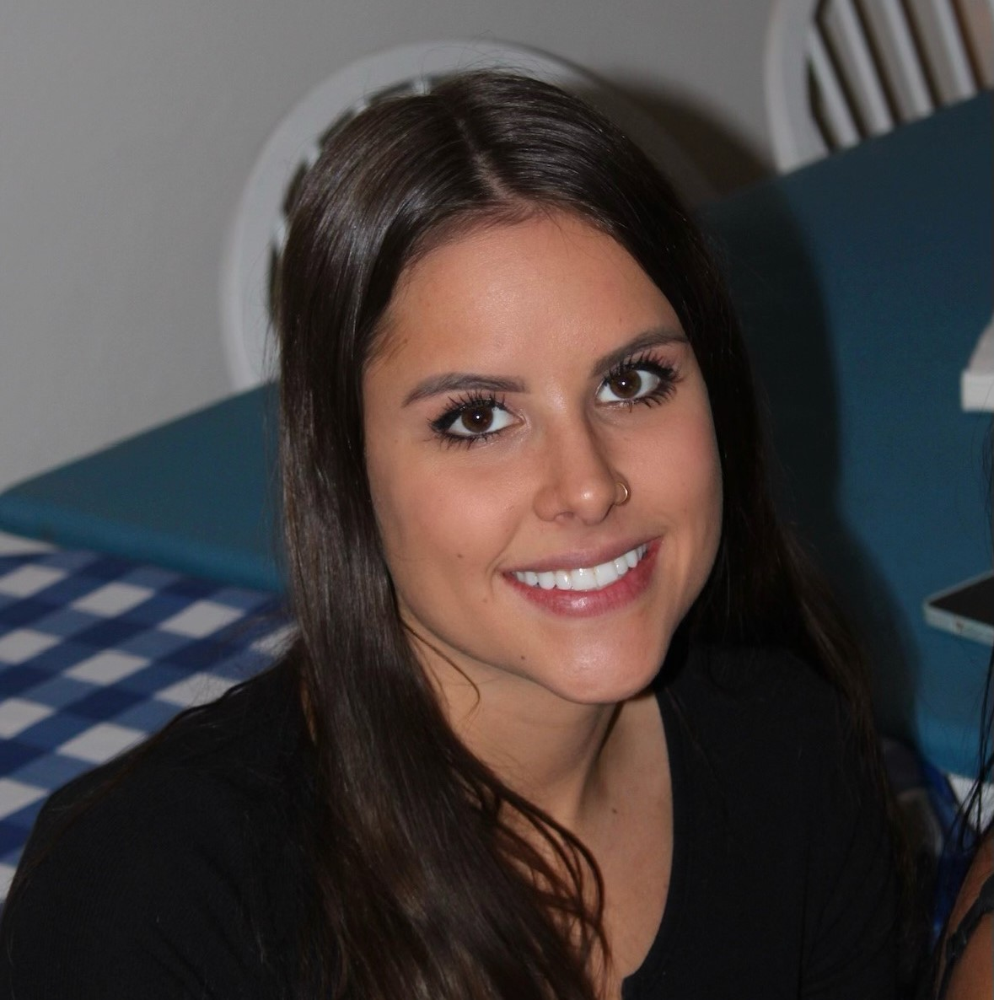

About the Creators
Charlie Kisylia- Charlie Kisylia is a Junior Computer Science student at Colorado State University.
He is a founder of CampForMe and is the current CEO of the company.
His passion for fly fishing and outdoor activities has led him to be the designated leader of the business.
Preston Krieger- Preston Krieger is a Senior computer science student at Colorado State University.
He has been a volunteer camp counselor at CampForMe for 30 years. His love for children and the outdoors has
made him the father figure of the company.
Sammy White - Sammy White is a Junior at Colorado State University studying
computer science. He was originally the co-founder of the company, however was fired early on as the power got to his head.
We humbled him a bit after finding him asleep on the job and he was rehired as a level 1 employee.
Tanner Stromberg - Tanner Stromberg is a Senior at Colorado State University studying Computer Information Systems.
He has been the primary camp counselor at CampForMe for 3 years.
He is dedicated to providing a safe and fun camping experience.

Ciara Viar - Ciara Viar is a Senior Computer Information Systems student at Colorado State University.
She is a world renowned camper and the current CFO of the company. Ciara put her blood sweat and tears into
this company, it is her greatest achievement. She will financially support this whole company.
Jeff Stilwell - Jeff is a Junior at Colorado State University, he studies Computer Information Systems.
He was hired on as an intern and has been with the company for 3 months.
We plan to offer him a full time position when he is finished with his internship.
Jack Duval - Jack Duval is a Junior Computer Information Systems student at Colorado State University. He is a staple within our company and is the head designer of all apparel. He created our logo and runs e-commerce and social media within the business.